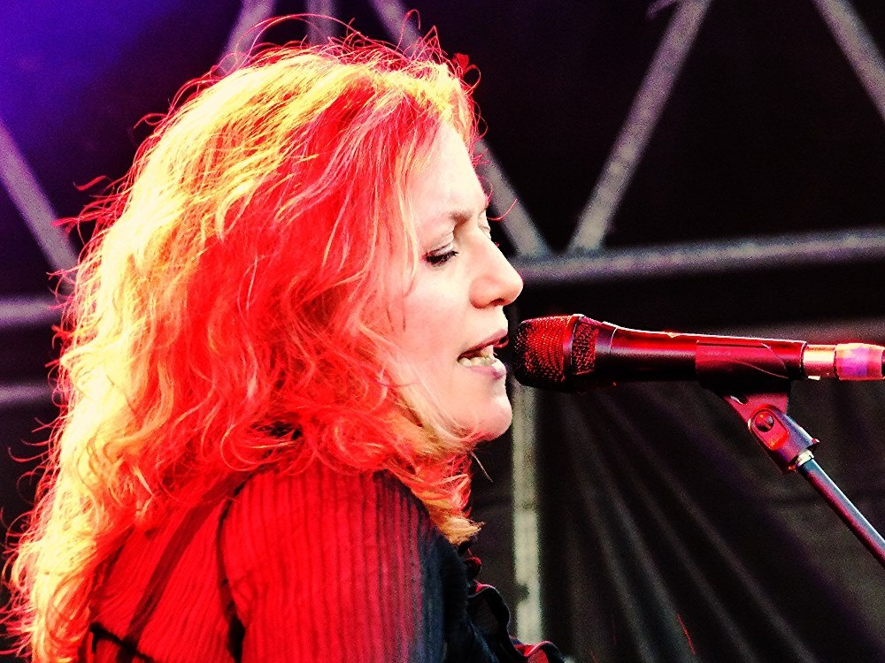

Voix · Expression · Scène
VoiceWorld
Le Chant des Possibles

Photographie de scène
À propos
Une vie de voix et de scène
Je suis Susan Brown, chanteuse, musicienne et coach vocal. Mon parcours franco-britannique s'est construit entre musique, théâtre et transmission.
Formée à Dublin aux arts de la scène et à la comédie musicale, puis à la pédagogie théâtrale à la Sorbonne Nouvelle, j'accompagne depuis de nombreuses années chanteurs, comédiens et professionnels dans leur expression.
Sur scène comme en coaching, une même recherche : la justesse, la présence et la liberté.
Coaching vocal · Prise de parole
L'Académie de la Voix
« Si votre voix pouvait parler, que dirait-elle de vous ? »
Pour les artistes comme pour les professionnels : explorer sa voix, affiner sa technique et gagner en aisance.


Artiste · Chanteuse · Musicienne
Sur scène
Chant, guitare, enregistrements et concerts. Un univers musical à découvrir, notamment avec The Brownies.



Entrons en contact
Et si nous faisions entendre votre projet ?
Coaching individuel, atelier ou projet musical : échangeons.
Me contacter sur LinkedIn